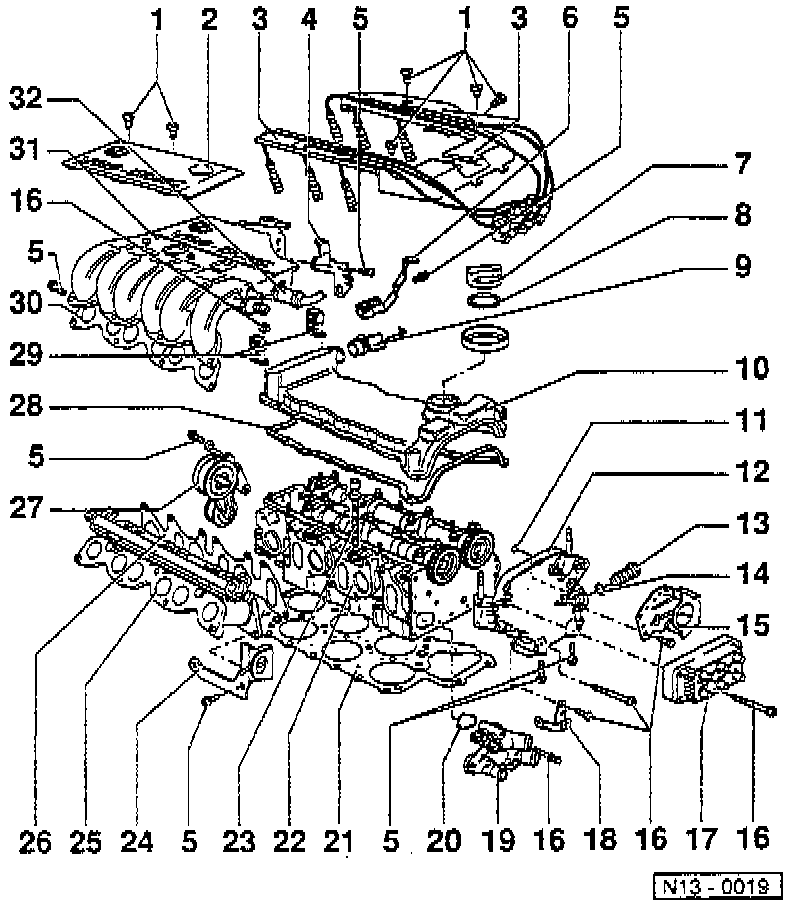

Section II - Cylinder Head
SECTION II
LEGEND
1 Cover Screws
2 Cover
3 High Tension Wire Guide
4 Rear Left Support
5 Bracket Bolt
6 Rear Right Support
7 Cap
8 Seal
9 Hose
10 Cylinder Head (Valve) Cover
11 O-Ring
12 Camshaft Sprocket Cover
13 Chain Tensioner For Double Chain
14 Seal
15 Bracket For 42-pin Connector And Aux. Water Pump
16 Coil Mounting Bolt
17 Ignition Coil
18 Bracket For Electric Wires
19 Thermostat Housing
20 O-Ring
21 Cylinder Head Gasket
22 Cylinder Head
23 Cylinder Head Bolt
24 Lifting Eye
25 intake Manifold - Lower Section
26 Gasket For Intake Manifold Lower Section
27 Ribbed Drive Belt Tensioner
28 Cylinder Head (Valve) Cover Gasket
29 Bracket For Fuel Lines
30 Gasket For Upper Intake Manifold
31 Intake Manifold Upper Section
32 Vacuum Hose To Brake Servo
NOTE: During removal and installation procedures, refer to the component location illustration above and component notes below.
COMPONENT NOTES
Cover Screws (1)
- Tighten to: 5 Nm (44 inch lbs.).
Cover (2)
- Over upper section of intake manifold.
Rear Left Support (4)
- Between upper section of intake manifold and cylinder head.
- With engine ground connection.
Bracket Bolt (5)
- Tighten to: 25 Nm (18 ft. lbs.).
Right Rear Support (6)
- Between upper section of intake manifold and cylinder head.
- With bracket for fuel lines.
Seal (8)
- Replace if damaged.
Hose (9)
- For crankcase breather.
- To crankcase breather valve.
Cylinder Head (Valve) Cover (10)
- Refer to Cylinder Head Assembly for procedure.
O-ring (11)
- Always replace.
- Coat with oil before assembling and insert in cane shaft sprocket cover.
Camshaft Sprocket Cover (12)
- Coat sealing surfaces with sealer part No. AMV 188 001 02, or equivalent.
- If only the camshaft sprocket cover has been removed, prepare cylinder head gasket for assembly as outlined under Cylinder Head Assembly.
Chain Tensioner For Double Chain (13)
- Bleed as outlined in Section I above.
- Tighten to: 30 Nm (22 ft. lbs.).
- Only turn engine with chain tensioner installed.
Seal (14)
- Always replace.
Bracket (15)
- or 42-pin connector and pump for coolant continued circulation.
Coil Mount Bolt (16)
- Tighten to: 10 Nm (7 ft. lbs.).
Bracket (18)
- For electric wires.
Thermostat Housing (19)
- Dismantling and assembling, refer to Cooling System.
O-ring (20)
- Always replace.
Cylinder Head Gasket (21)
- Refer to Cylinder Head Assembly for procedure.
- Always replaced when cylinder head removed.
- Always replace coolant when gasket is replaced.
Cylinder Head 22)
- Refer to Cylinder Head Assembly for procedure.
- Always replace coolant when cylinder head is removed.
Cylinder Head Bolts (23)
- Refer to Cylinder Head Assembly for procedure.
- Always replace.
Gasket For Lower Intake Manifold Section (26)
- Always replace.
Ribbed Drive Belt Tensioner (27)
- Refer to Drive Belts, Mounts, Brackets and Accessories for procedure.
Cylinder Head (Valve) Cover Gasket (28)
- Always replace.
- Note installed position during removal.
Bracket (29)
- For fuel lines.
Gasket For Upper Intake Manifold Section (30)
- Always replace.
Upper Intake Manifold Section (31)
- First tighten intake manifold lower section, then the two rear supports, items 4 and 6).
Vacuum Hose (32)
- To brake servo.